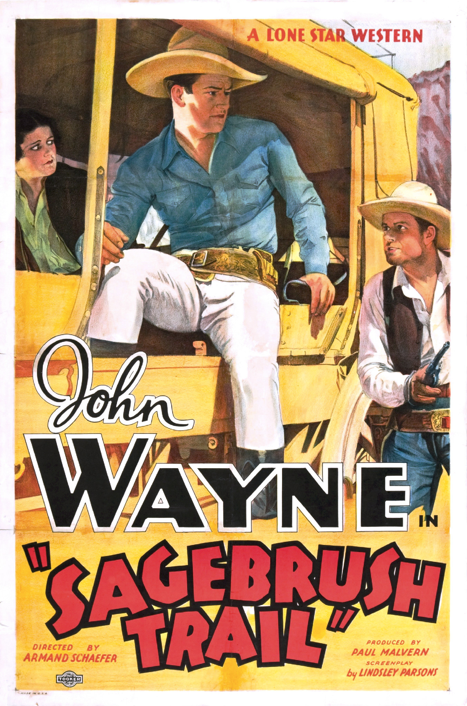
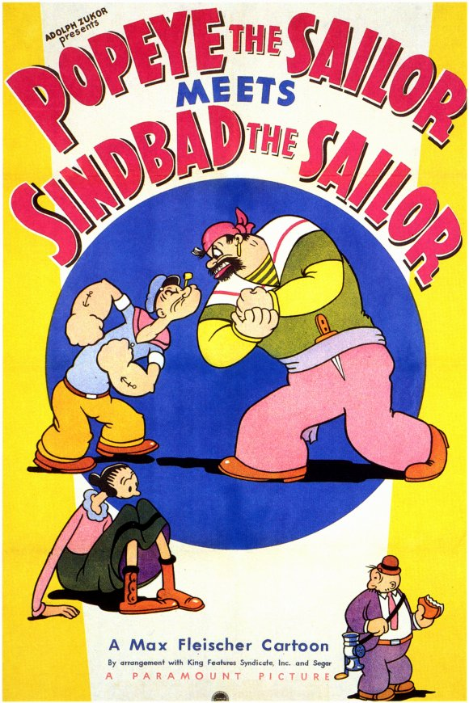

The Dance of Life
8.3
1929 1h 55m Musical

Burlesque comic Ralph "Skid" Johnson (Skelly), and specialty dancer Bonny Lee King (Carroll), end up together on a cold, rainy night at a tr…
5 commentsMovie Buff
8.3
1929 1h 55m Musical
Burlesque comic Ralph "Skid" Johnson (Skelly), and specialty dancer Bonny Lee King (Carroll), end up together on a cold, rainy night at a tr…
5 comments3.2
1933 54m Western
Sentenced for a murder he did not commit, John Brant escapes from prison determined to find the real killer. By chance Brant's narrow escap…
89 comments9.0
1955 1h 59m Drama

Frankie Machine (Frank Sinatra) is released from the federal Narcotic Farm in Lexington, Kentucky with a set of drums and a new outlook on…
18 comments2.3
1964 1h 21m Comedy

The Martians Momar ("Mom Martian") and Kimar ("King Martian") are worried that their children Girmar ("Girl Martian") and Bomar ("Boy Marti…
465 comments6.3
1936 16m Cartoon
In this short, Sindbad the Sailor (presumably Bluto playing a "role") proclaims himself, in song, to be the greatest sailor, adventurer and…
0 comments